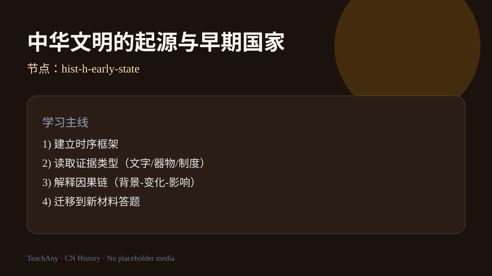
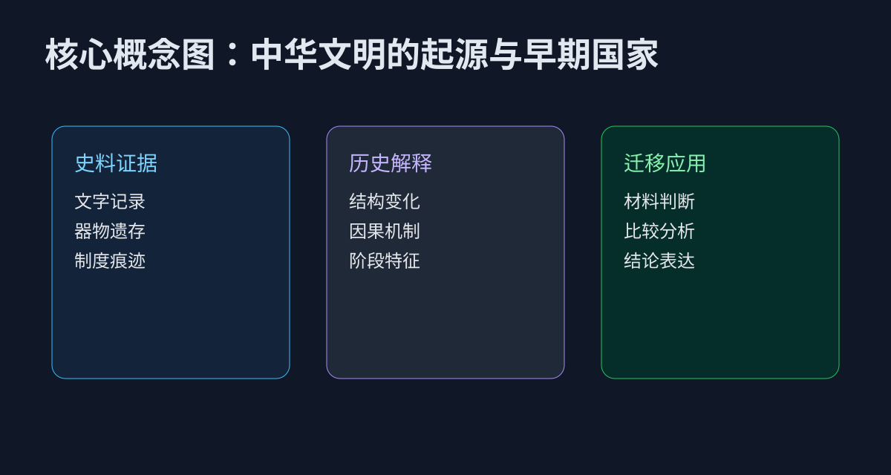
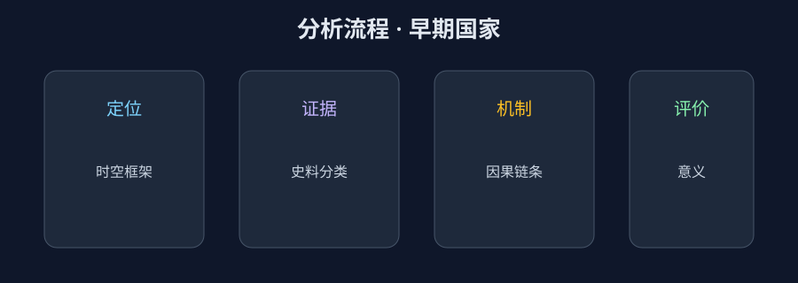

ABT 情境引入
And：你知道甲骨文和青铜器很重要，也了解“国家”不是天生就有。
But：但答题时常把文字材料只当翻译题，忽略其背后的治理结构信息。
Therefore：本课把文字与制度证据联动，训练“材料识别—结构判断—历史意义”完整表达。
通过甲骨文、青铜铭文与遗址证据，理解私有制、阶级与早期国家特征。
证据链因果解释迁移应用

课标强调以甲骨文、青铜铭文与考古遗存互证，解释早期国家的权力结构、社会分层与祭祀秩序。学生需区分“部落联盟”“方国”与“早期国家”在治理范围、常备暴力与赋役能力上的差异。
导入任务：阅读一段模拟卜辞材料，标出“王—贵族—平民—奴隶”四层主体，并说明每层对应的权力来源。迁移任务：把证据链方法迁移到另一则青铜铭文摘要，完成“证据—机制—结论”三段式表达，避免只复述结论而不解释机制，并在课后完成一次 150 字小论文式段落。
And：你知道甲骨文和青铜器很重要，也了解“国家”不是天生就有。
But：但答题时常把文字材料只当翻译题，忽略其背后的治理结构信息。
Therefore：本课把文字与制度证据联动，训练“材料识别—结构判断—历史意义”完整表达。
点击时代按钮切换疆域版图；悬停高亮边界；点击红色城市标记查看详情。
研究“早期国家”时，最能体现公共权力的是？
把本课知识拆成三层：先找可核验史料，再写因果机制，最后完成迁移表达。避免只背结论、不引证据。

答题时按“定位→证据→机制→评价”四步组织语言；每步至少对应一条材料信息，防止空泛概括。

“早期国家”不是一蹴而就，而是权力组织方式逐步升级的过程。先建立这条主线，再读卜辞与铭文。
判断一个政权是否已是“早期国家”，不能只看它是否强大，而要看它是否拥有常态化、制度化的公共权力。商代之所以被确认为成熟的早期国家，正因为它同时具备以下三个相互支撑的支柱。
商王通过垄断占卜与祭祀，宣称自己是人与祖先、上帝沟通的唯一中介，使统治披上神圣外衣。“国之大事，在祀与戎”，祭祀正是王权合法性的来源。
商王拥有可调动的常备军队与方国军事力量，能对外征伐、对内镇压。卜辞中大量“王令某族征某方”的记录，说明军事征发已是制度化的国家行为。
通过内外服制管理王畿与方国，征收贡赋、征发劳役，并以文字记录管理事务——这标志国家已能在较大范围内组织资源。
三者合一，才构成“早期国家”的判断标准。单有精美青铜器或庞大人口，都不足以证明国家形态的成熟。
商与西周都属早期国家，但治理逻辑发生了关键转变：商以神权维系王权，西周则以血缘宗法 + 分封 + 礼乐构建更稳定的层级秩序。理解这一转变，是读懂“早期国家如何走向成熟”的钥匙。
王借占卜祭祀垄断与神沟通的权力；对外服方国控制松散，更多依赖宗教权威与军事威慑，缺少稳定的继承与层级制度。
以嫡长子继承（宗法）确定尊卑，按血缘层层分封诸侯“以藩屏周”，再用礼乐规范行为，形成“家国同构”的稳定秩序。
两者都依赖血缘与人身关系，地方仍有较强自治；一旦血缘纽带松弛（如春秋），分封制便走向崩解，最终被秦的郡县官僚制取代。
由此可见，从商到周再到秦，是“权力如何被组织与传递”不断制度化的过程，而非简单的朝代更替。
把下列政治组织形态按演进先后依次点击，系统会标号；点错可“重置”。
拖动“王权集中度”，从商代神权王权到秦式官僚集权，观察治理特征如何变化。
不同材料能回答不同问题。判断每条材料主要属于哪一类，点击标签后“批改”。
先判断是卜辞、铭文还是考古遗存，不同材料可回答的问题不同。
识别“王权、贵族、地方势力、平民”在材料中的行动线索。
解释祭祀、征发、分封如何共同维系政治秩序。
比较商周与秦的国家组织方式，理解“早期国家”到“帝国国家”转型。
区分“材料直接可见”与“推断可能性”，避免绝对化结论。
题干示例：卜辞记“王令某族征方，祭于祖庙”。
标准拆解：①时空定位（商代王权中心）②证据分类（军事征发+宗庙祭祀）③机制链（神权合法性支撑政治动员）④历史意义（公共权力与礼制合一）。
易错点：只翻译文字，不说明“命令—执行—合法性”背后的治理逻辑。
同样是“青铜器铭文”，文旅解说常强调工艺；历史分析要进一步追问：它如何体现权力分配与制度秩序。
给一段铭文做“主体-行为-目的”三栏标注。
判断这条材料更支持“礼制整合”还是“军事征服”。
用一句话连接商周制度与秦统一之间的历史连续性。
输入卜辞或铭文摘要，自动生成“权力结构图 + 论证草稿”。
选择后立即显示解析。完成后可在底部查看正确率。
出现甲骨文记事与青铜铭文时，最佳分析方向是？
延伸：若材料显示“地方贵族可独立征兵”，你会如何修正对王权强度的判断？
完成“材料类型-可回答问题”配对表（卜辞/铭文/遗址）。
任选两条材料，写“权力主体→行为→治理功能”三句论证。
围绕“商周到秦的国家转型”写 150 字短论，须含一条反向观点回应。
评分提示：材料准确（35%）+机制解释（45%）+论证完整（20%）。
课后复盘：用 3 句话回答“这条材料证明了什么、如何证明、还有什么不确定性”。
前置知识：中华文明起源（史前·新石器）。后续知识：先秦（夏商周·春秋战国）与秦汉统一。
视频内容：课程主线、证据框架与迁移任务。